3.1 Introduction: Exploratory Data Analysis on WITS data
World Integrated Trade Solution (WITS) emerges as a pivotal platform, offering a comprehensive view of international trade dynamics, with a particular focus on Turkey from 2002 to 2020. This powerful tool aggregates data from diverse sources to furnish users with valuable insights into Turkey’s merchandise trade, tariffs, and non-tariff measures during this specific period. With an expansive database, WITS facilitates informed decision-making and strategic planning for researchers, policymakers, and businesses interested in Turkey’s trade landscape.
Embarking on an Exploratory Data Analysis (EDA) journey within WITS involves loading datasets, cleaning data, and employing statistical and visual analyses specific to Turkey’s trade from 2002 to 2020. This process unveils trade patterns, identifies trends, and provides actionable insights, enabling stakeholders to navigate the complexities of Turkey’s trade dynamics during this crucial timeframe. The synergy between WITS and EDA empowers users to make informed decisions and strategic choices, fostering a more interconnected and informed landscape for Turkey’s economy and trade.
3.2 Step 1: Load Required Libraries
Code
library(tidyverse)
── Attaching core tidyverse packages ──────────────────────── tidyverse 2.0.0 ──
✔ dplyr 1.1.4 ✔ readr 2.1.4
✔ forcats 1.0.0 ✔ stringr 1.5.1
✔ ggplot2 3.4.4 ✔ tibble 3.2.1
✔ lubridate 1.9.3 ✔ tidyr 1.3.0
✔ purrr 1.0.2
── Conflicts ────────────────────────────────────────── tidyverse_conflicts() ──
✖ dplyr::filter() masks stats::filter()
✖ dplyr::lag() masks stats::lag()
ℹ Use the conflicted package (<http://conflicted.r-lib.org/>) to force all conflicts to become errors
Description: Loading necessary libraries provides access to functions and tools that simplify data manipulation and visualization. dplyr is helpful for data wrangling, and ggplot2 is excellent for creating informative and visually appealing plots.
Description: Loading datasets is the initial step in any data analysis. It allows us to bring in the data that we’ll be working with throughout the analysis.
year reporter_iso reporter_name commodity_code
Min. :2002 Length:90663 Length:90663 Length:90663
1st Qu.:2006 Class :character Class :character Class :character
Median :2011 Mode :character Mode :character Mode :character
Mean :2011
3rd Qu.:2016
Max. :2020
commodity_name section_code section_name trade_value_usd_imp
Length:90663 Length:90663 Length:90663 Min. :0.000e+00
Class :character Class :character Class :character 1st Qu.:4.259e+05
Mode :character Mode :character Mode :character Median :3.138e+06
Mean :3.836e+07
3rd Qu.:1.574e+07
Max. :4.073e+10
trade_value_usd_exp
Min. :0.000e+00
1st Qu.:9.152e+04
Median :1.150e+06
Mean :2.612e+07
3rd Qu.:8.788e+06
Max. :1.334e+10
year reporter_iso reporter_name partner_iso
Min. :2002 Length:3887005 Length:3887005 Length:3887005
1st Qu.:2008 Class :character Class :character Class :character
Median :2013 Mode :character Mode :character Mode :character
Mean :2012
3rd Qu.:2017
Max. :2020
partner_name commodity_code commodity_name section_code
Length:3887005 Length:3887005 Length:3887005 Length:3887005
Class :character Class :character Class :character Class :character
Mode :character Mode :character Mode :character Mode :character
section_name trade_value_usd_imp trade_value_usd_exp
Length:3887005 Min. :0.000e+00 Min. :0.000e+00
Class :character 1st Qu.:0.000e+00 1st Qu.:4.230e+02
Mode :character Median :0.000e+00 Median :8.367e+03
Mean :8.947e+05 Mean :6.093e+05
3rd Qu.:1.157e+04 3rd Qu.:8.157e+04
Max. :1.749e+10 Max. :6.528e+09
Code
str(read_wits_all_country_data)
NULL
Code
summary(read_wits_all_country_data)
Length Class Mode
0 NULL NULL
Description: Checking the structure and summary of the datasets provides an understanding of the variables, data types, and basic statistics. This helps identify potential issues and informs subsequent cleaning and analysis steps.
Description: Cleaning the data involves addressing missing values and outliers. It ensures that the data is reliable and ready for further analysis.
3.6 Step 5: Exploratory Data Analysis (EDA)
3.6.1 Country Profile
Export Ranking:
Import Ranking:
Top Trading Partners:
Most available data is as of 2020 year-end:
Code
#Calculate Country Profile Stats
Line Chart: Exports and Imports over the Years:
Code
total_exports <- read_wits_turkey_data_only %>%group_by(year) %>%summarize(total_exports =sum(trade_value_usd_exp))total_imports <- read_wits_turkey_data_only %>%group_by(year) %>%summarize(total_imports =sum(trade_value_usd_imp))# Visualize exports and imports over the yearsggplot() +geom_line(data = total_exports, aes(x = year, y = total_exports, color ="Exports"), size =1.5) +geom_line(data = total_imports, aes(x = year, y = total_imports, color ="Imports"), size =1.5) +labs(title ="Turkey's Exports and Imports Over the Years", x ="Year", y ="Trade Value (USD)")
Warning: Using `size` aesthetic for lines was deprecated in ggplot2 3.4.0.
ℹ Please use `linewidth` instead.
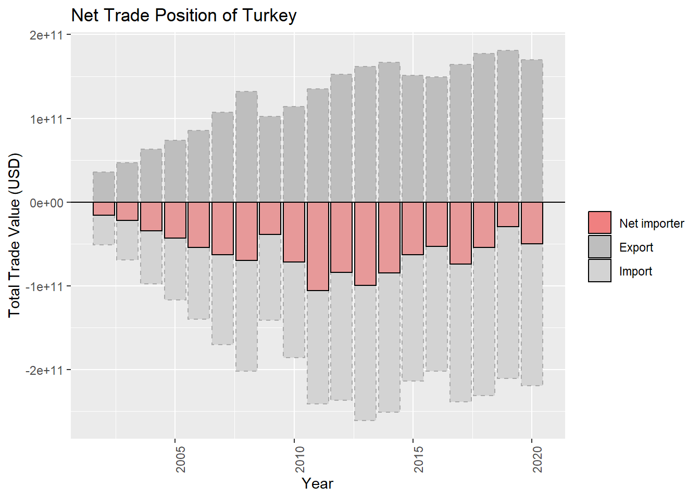
Line Chart Description: Analyzing exports and imports over time provides insights into the trade trends of the country. Visualization helps in identifying patterns and understanding the overall trade dynamics
Result: Turkey’s status is as a net importer since 2002
3.6.2 Exports & Imports Analysis
Top 10 product categories are listed in this section both for exports and imports in order to analyze this further by looking into trade partners of these product types
Clustered Column Chart: Diversity of Exported Products
# Truncate section names to the first 20 charactersexport_plot_data$truncated_name <-str_trunc(export_plot_data$section_name, 50)# Get distinct truncated names for colorscolor_names <-unique(export_plot_data$truncated_name)# Generate a limited number of distinct colorscolors <-brewer.pal(length(color_names), "Set3")ggplot(data = export_plot_data, aes(x =reorder(section_name, -total_export), y = total_export, fill = truncated_name)) +geom_bar(stat ="identity", color ="black") +labs(title ="Top 10 Diversity of Exported Products (2002-2020, Turkey)", x ="Products", y ="Total Export Value (USD)") +theme(axis.text.x =element_blank(), axis.title.x =element_blank(), legend.position ="bottom") +guides(fill =guide_legend(nrow =5)) +scale_fill_manual(values =setNames(colors, color_names), name ="")
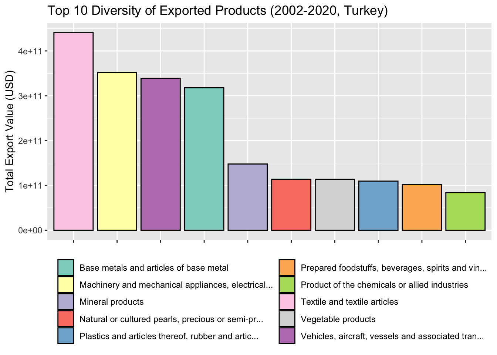
Chart Description:The “Diversity of Exported Products” graphic provides insights into Turkey’s international trade from 2002 to 2020. It showcases the top 10 product categories that Turkey has predominantly exported over the years. Each product category is represented by a distinct color, offering a visual representation of the diversity and distribution of exported goods. The vertical bars display the total export values in USD for each product category, providing a clear overview of Turkey’s major export sectors. The graphic aids in identifying trends, patterns, and the relative significance of various product categories in Turkey’s export landscape.
Bubble Chart: Relationship between Complexity and Annual Export Growth (CAGR Last 5 years) for Top Product Categories
Code
# Step 1: Find the top 10 section_name based on trade_valuetop_sections <- read_wits_turkey_data_with_partners %>%group_by(section_name) %>%summarize(total_export =sum(trade_value_usd_exp)) %>%arrange(desc(total_export)) %>%head(10)# Step 2: Filter the dataframe to include only the top 10 section_namesread_wits_turkey_data_with_partners_top10 <- read_wits_turkey_data_with_partners %>%filter(section_name %in% top_sections$section_name)# Step 3: Count partner_names corresponding to the top 10 section_names in the entire dataframeread_wits_turkey_data_with_partners_top10 <- read_wits_turkey_data_with_partners_top10 %>%group_by(section_name) %>%mutate(partner_count =n_distinct(partner_name)) %>%ungroup()read_wits_turkey_data_with_partners_top10 <- read_wits_turkey_data_with_partners_top10 %>%group_by(section_name) %>%mutate(cagr = ((trade_value_usd_exp[2020]/trade_value_usd_exp[2015])^(1/5)-1)*100) %>%ungroup()read_wits_turkey_data_with_partners_top10 <- read_wits_turkey_data_with_partners_top10 %>%filter(year ==2020) %>%group_by(section_name) %>%mutate(total_trade_value_exp_2020 =sum(trade_value_usd_exp)/1000000) %>%ungroup()print(read_wits_turkey_data_with_partners_top10)
# A tibble: 222,082 × 14
year reporter_iso reporter_name partner_iso partner_name commodity_code
<int> <chr> <chr> <chr> <chr> <chr>
1 2020 tur Turkey aze Azerbaijan 060110
2 2020 tur Turkey bel Belgium 060110
3 2020 tur Turkey chl Chile 060110
4 2020 tur Turkey fra France 060110
5 2020 tur Turkey geo Georgia 060110
6 2020 tur Turkey irq Iraq 060110
7 2020 tur Turkey isr Israel 060110
8 2020 tur Turkey nld Netherlands 060110
9 2020 tur Turkey syr Syria 060110
10 2020 tur Turkey tkm Turkmenistan 060110
# ℹ 222,072 more rows
# ℹ 8 more variables: commodity_name <chr>, section_code <chr>,
# section_name <chr>, trade_value_usd_imp <dbl>, trade_value_usd_exp <dbl>,
# partner_count <int>, cagr <dbl>, total_trade_value_exp_2020 <dbl>
Code
# Truncate section names to the first 20 charactersread_wits_turkey_data_with_partners_top10$truncated_name <-str_trunc(read_wits_turkey_data_with_partners_top10$section_name, 50)# Get distinct truncated names for colorscolor_names <- read_wits_turkey_data_with_partners_top10$truncated_nameggplot(read_wits_turkey_data_with_partners_top10, aes(x = partner_count, y = total_trade_value_exp_2020, size = cagr, color = truncated_name)) +geom_point(alpha =0.7) +scale_size_continuous(range =c(3, 15)) +scale_y_continuous(limits =c(min(read_wits_turkey_data_with_partners_top10$total_trade_value_exp_2020), max(read_wits_turkey_data_with_partners_top10$total_trade_value_exp_2020) +5)) +# adjust y-axis scalescale_x_continuous(limits =c(min(read_wits_turkey_data_with_partners_top10$partner_count), max(read_wits_turkey_data_with_partners_top10$partner_count) +5)) +# adjust x-axis scalescale_color_manual(values = scales::hue_pal()(length(unique(read_wits_turkey_data_with_partners_top10$section_name)))) +# Use a different color palettelabs(title ="Bubble Chart of Top 10 Section Names",x ="Number of Export Countries",y ="Total Export Revenue mn USD (2020) ",size ="5 year CAGR", color ="Section Name") +theme_minimal ()
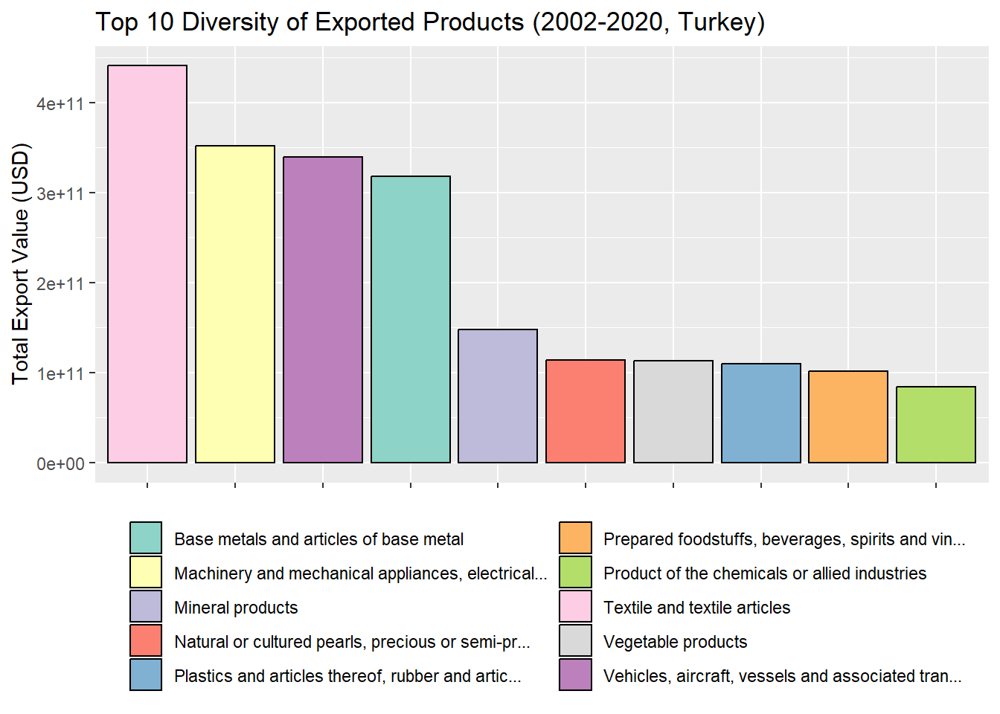
Chart Description: Complexity represents count of Turkey’s export partners for each product category that are defined in Analysis of Diversity of Exported Products, that are shown on x axis. Compounded growth rates of exports are represented on y axis. Each bubble represents exports value as of 2020 for each product category.
Clustered Column Chart: Diversity of Imported Products
# Truncate section names to the first 20 charactersimported_plot_data$truncated_name <-str_trunc(imported_plot_data$section_name, 50)# Get distinct truncated names for colorscolor_names <-unique(imported_plot_data$truncated_name)# Generate a limited number of distinct colorscolors <-brewer.pal(length(color_names), "Set3")ggplot(data = imported_plot_data, aes(x =reorder(section_name, -total_import), y = total_import, fill = truncated_name)) +geom_bar(stat ="identity", color ="black") +labs(title ="Top 10 Diversity of Imported Products (2002-2020, Turkey)", x ="Products", y ="Total Import Value (USD)") +theme(axis.text.x =element_blank(), axis.title.x =element_blank(), legend.position ="bottom") +guides(fill =guide_legend(nrow =5)) +scale_fill_manual(values =setNames(colors, color_names), name ="")
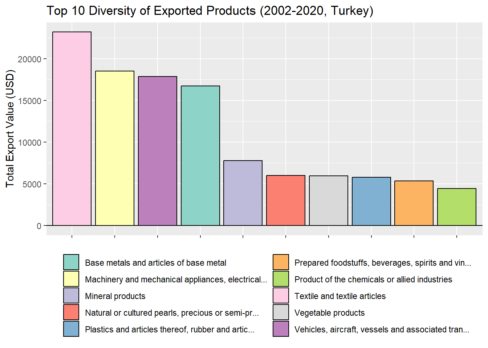
Chart Description: The “Diversity of Imported Products” graphic illustrates the diversity of products that Turkey has imported from other countries between 2002 and 2020. Similar to the exported products graphic, this visualization highlights the top 10 imported product categories. Each category is uniquely colored for easy identification. The vertical bars display the total import values in USD for each product category, offering insights into the composition of Turkey’s imports. This graphic assists in understanding the import dynamics, identifying significant product categories, and discerning patterns in Turkey’s international trade relationships.
Bubble Chart: Relationship between Complexity and Annual Import Growth (CAGR Last 5 years) for Top Product Categories
Code
# Step 1: Find the top 10 section_name based on trade_valuetop_sections <- read_wits_turkey_data_with_partners %>%group_by(section_name) %>%summarize(total_import =sum(trade_value_usd_imp)) %>%arrange(desc(total_import)) %>%head(10)# Step 2: Filter the dataframe to include only the top 10 section_namesread_wits_turkey_data_with_partners_top10 <- read_wits_turkey_data_with_partners %>%filter(section_name %in% top_sections$section_name)# Step 3: Count partner_names corresponding to the top 10 section_names in the entire dataframeread_wits_turkey_data_with_partners_top10 <- read_wits_turkey_data_with_partners_top10 %>%group_by(section_name) %>%mutate(partner_count =n_distinct(partner_name)) %>%ungroup()read_wits_turkey_data_with_partners_top10 <- read_wits_turkey_data_with_partners_top10 %>%group_by(section_name) %>%mutate(cagr = ((trade_value_usd_imp[2020]/trade_value_usd_imp[2015])^(1/5)-1)*100) %>%ungroup()read_wits_turkey_data_with_partners_top10 <- read_wits_turkey_data_with_partners_top10 %>%filter(year ==2020) %>%group_by(section_name) %>%mutate(total_trade_value_imp_2020 =sum(trade_value_usd_imp)/1000000) %>%ungroup()print(read_wits_turkey_data_with_partners_top10)
# A tibble: 209,510 × 14
year reporter_iso reporter_name partner_iso partner_name commodity_code
<int> <chr> <chr> <chr> <chr> <chr>
1 2020 tur Turkey aze Azerbaijan 060110
2 2020 tur Turkey bel Belgium 060110
3 2020 tur Turkey chl Chile 060110
4 2020 tur Turkey fra France 060110
5 2020 tur Turkey geo Georgia 060110
6 2020 tur Turkey irq Iraq 060110
7 2020 tur Turkey isr Israel 060110
8 2020 tur Turkey nld Netherlands 060110
9 2020 tur Turkey syr Syria 060110
10 2020 tur Turkey tkm Turkmenistan 060110
# ℹ 209,500 more rows
# ℹ 8 more variables: commodity_name <chr>, section_code <chr>,
# section_name <chr>, trade_value_usd_imp <dbl>, trade_value_usd_exp <dbl>,
# partner_count <int>, cagr <dbl>, total_trade_value_imp_2020 <dbl>
Code
# Truncate section names to the first 20 charactersread_wits_turkey_data_with_partners_top10$truncated_name <-str_trunc(read_wits_turkey_data_with_partners_top10$section_name, 50)# Get distinct truncated names for colorscolor_names <- read_wits_turkey_data_with_partners_top10$truncated_nameggplot(read_wits_turkey_data_with_partners_top10, aes(x = partner_count, y = total_trade_value_imp_2020, size = cagr, color = truncated_name)) +geom_point(alpha =0.7) +scale_size_continuous(range =c(3, 15)) +scale_y_continuous(limits =c(min(read_wits_turkey_data_with_partners_top10$total_trade_value_imp_2020), max(read_wits_turkey_data_with_partners_top10$total_trade_value_imp_2020) +5)) +# adjust y-axis scalescale_x_continuous(limits =c(min(read_wits_turkey_data_with_partners_top10$partner_count), max(read_wits_turkey_data_with_partners_top10$partner_count) +5)) +# adjust x-axis scalescale_color_manual(values = scales::hue_pal()(length(unique(read_wits_turkey_data_with_partners_top10$section_name)))) +# Use a different color palettelabs(title ="Bubble Chart of Top 10 Section Names",x ="Number of Importers",y ="Total Import mn USD (2020) ",size ="5 year CAGR", color ="Section Name") +theme_minimal ()
Chart Description: Complexity represents count of Turkey’s import partners for each product category that are defined in Analysis of Diversity of Imported Products, that are shown on x axis. Compounded growth rates of imports are represented on y axis. Each bubble represents exports value as of 2020 for each product category.
3.6.3 Trade Partnership Analysis
Clustered Column Chart: Top 10 Trading Partners by Total Trade Value
# Get a color palette from RColorBrewerpartner_colors <-brewer.pal(length(top_partners$partner_name), "Set3")# Visualize top trading partnersggplot(data = top_partners, aes(x =reorder(partner_name, -total_trade), y = total_trade, fill = partner_name)) +geom_bar(stat ="identity", color ="black") +labs(title ="Top 10 Trading Partners", x ="Partner", y ="Total Trade Value (USD)") +theme(axis.text.x =element_text(angle =90, hjust =1)) +scale_fill_manual(values = partner_colors)+theme(legend.position ="none")
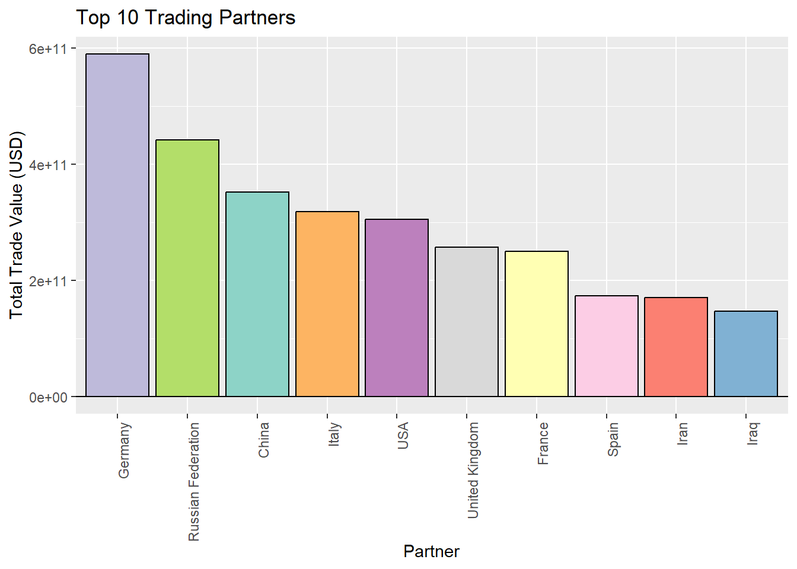
Chart Description: Analyzing trade with specific partners helps in identifying key collaborators. Visualizing the top trading partners provides a clear understanding of the major contributors to the country’s trade.
Clustered Column Chart: Trade Partner Classification as Net Exporter or Importer
# Get a color palette from RColorBrewerpartner_colors <-brewer.pal(n =length(top_partners$partner_name) *2, name ="Paired")
Warning in brewer.pal(n = length(top_partners$partner_name) * 2, name = "Paired"): n too large, allowed maximum for palette Paired is 12
Returning the palette you asked for with that many colors
Code
# Visualize import and export relations with top trading partnersggplot(data = top_partners, aes(x =reorder(partner_name, -total_export - total_import))) +geom_bar(aes(y = total_export, fill ="Export"), stat ="identity", position ="dodge", color ="black") +geom_bar(aes(y =-total_import, fill ="Import"), stat ="identity", position ="dodge", color ="black") +labs(title ="Import and Export Relations with Top 10 Trading Partners", x ="Partner", y ="Total Trade Value (USD)") +scale_fill_manual(values =c("Export"= partner_colors[1], "Import"= partner_colors[2]), name ="") +theme(axis.text.x =element_text(angle =90, hjust =1),legend.position ="top")
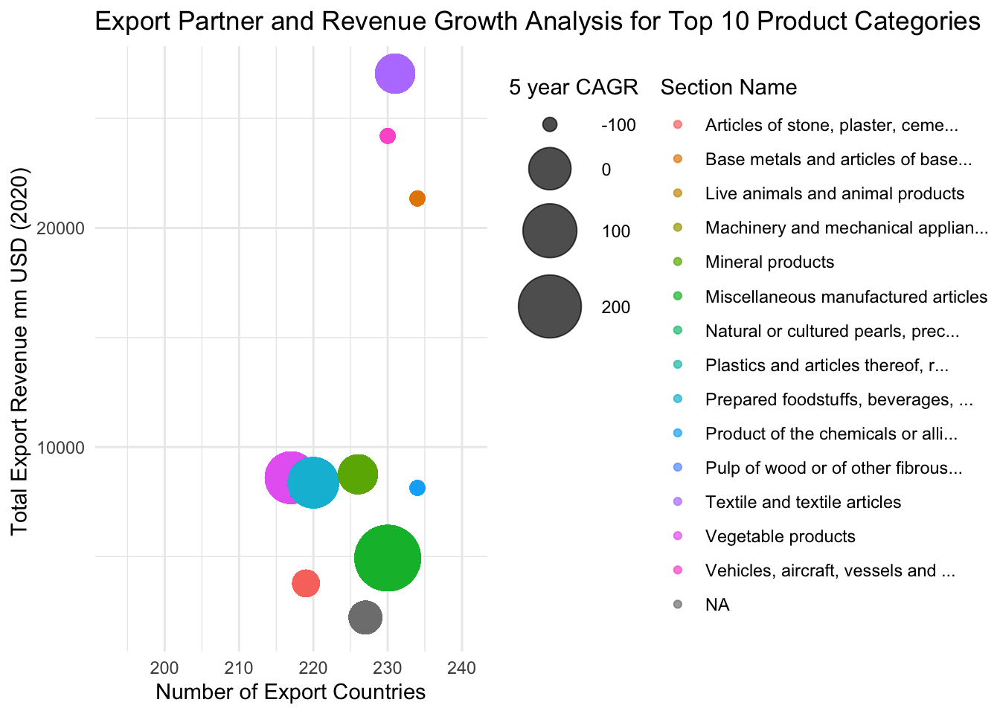
Clustered Column Chart: Net Trade Difference with Top 10 Trading Partners (2015-2020)
Code
# Vector of countries to filterselected_countries <-c("Germany", "Russian Federation", "China", "Italy", "USA", "United Kingdom", "France", "Spain", "Iran", "Iraq")top_partners <- read_wits_turkey_data_with_partners %>%filter(partner_name %in% selected_countries, year %in%2015:2020) %>%group_by(partner_name, year) %>%summarize(total_export =sum(trade_value_usd_exp),total_import =sum(trade_value_usd_imp)) %>%mutate(trade_difference = total_export - total_import)
`summarise()` has grouped output by 'partner_name'. You can override using the
`.groups` argument.
Code
# Create a bar plot to show trade comparison with selected trading partnersggplot(data = top_partners, aes(x =reorder(partner_name, -trade_difference), y = trade_difference/1000000, fill =factor(sign(trade_difference)))) +geom_bar(stat ="identity", position =position_dodge(width =0.8), color ="black", height =1.5) +# Adjust the 'height' parameterfacet_wrap(~year, scales ="free_y", ncol =3) +scale_fill_manual(values =c("red", "blue"), name ="",labels =c("Turkey net exporter", "Turkey net importer")) +labs(title ="Trade Comparison with Top 10 Trading Partners(2015-2020)",x ="Partner",y ="Trade Difference (Export - Import, mn USD)") +theme(axis.text.x =element_text(angle =90, hjust =1),legend.position ="top")
Warning in geom_bar(stat = "identity", position = position_dodge(width = 0.8),
: Ignoring unknown parameters: `height`
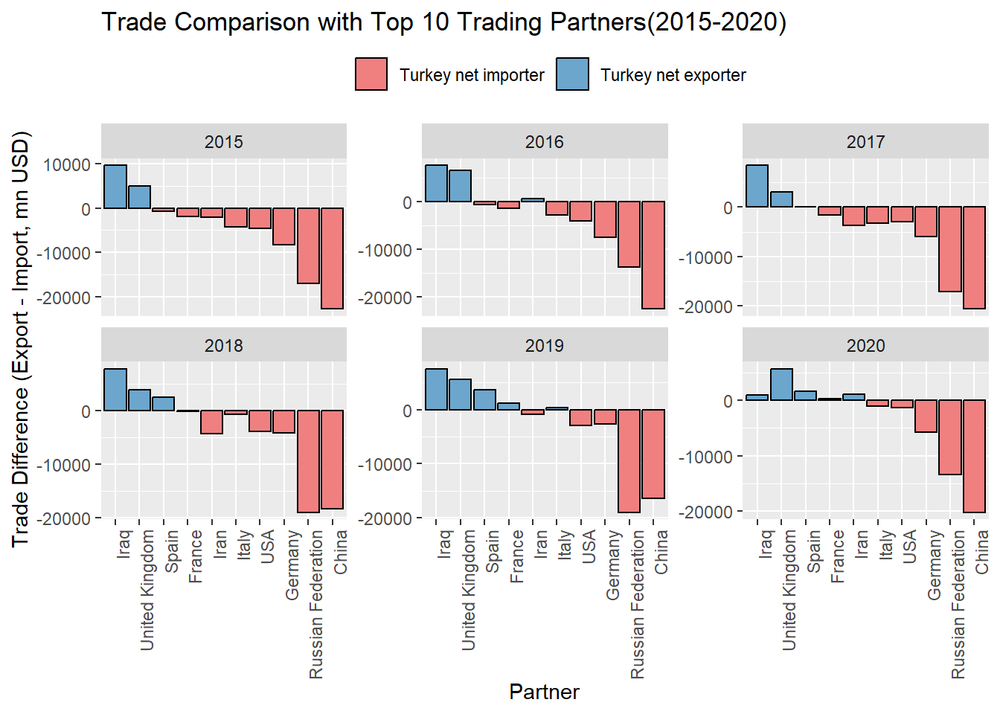
Chart Description: This bar plot illustrates the import and export relations between Turkey and its top 10 trading partners. Bars shows Turkey’s net importer & exporter status as each of them corresponds to a specific partner, and positive figures represent Turkey’s status as net exporter while negative figures represent net importer. The plot offers a concise overview of Turkey’s trade dynamics with its key partners, emphasizing the balance of trade and highlighting significant trading relationships. // Burada export-import yapıp net exporter veya net importer olup olmadığını olcelim
Lollipop Chart: Trend Analysis of Top 10 Trading Partners’ trade value
Code
# Replace "YourFirstYear" and "YourEndYear" with the actual years that is selected for the analysisfirst_year <-2015end_year <-2020# Calculate the total trade value for the first and end years for each partnertotal_trade_by_partner <- read_wits_turkey_data_with_partners %>%group_by(partner_name) %>%summarise(total_trade_first =sum(trade_value_usd_imp[year == first_year] + trade_value_usd_exp[year == first_year]),total_trade_end =sum(trade_value_usd_imp[year == end_year] + trade_value_usd_exp[year == end_year]))# Find the top 10 partners based on the total trade valuetop_10_partners <- total_trade_by_partner %>%top_n(10, wt = total_trade_end)# Calculate the percentage changepercentage_change <- top_10_partners %>%mutate(percentage_change = ((total_trade_end - total_trade_first) / total_trade_first) *100)# Create a lollipop chartggplot(percentage_change, aes(x =reorder(partner_name, percentage_change), y = percentage_change)) +geom_segment(aes(xend =reorder(partner_name, percentage_change), yend =0), color ="skyblue", size =1) +geom_point(color ="red", size =3) +labs(title ="Top 10 Partners: Percentage Change in Total Trade Value (2015 to 2020)",x ="Partner",y ="Percentage Change in Total Trade Value") +theme(axis.text.x =element_text(angle =90, hjust =1))
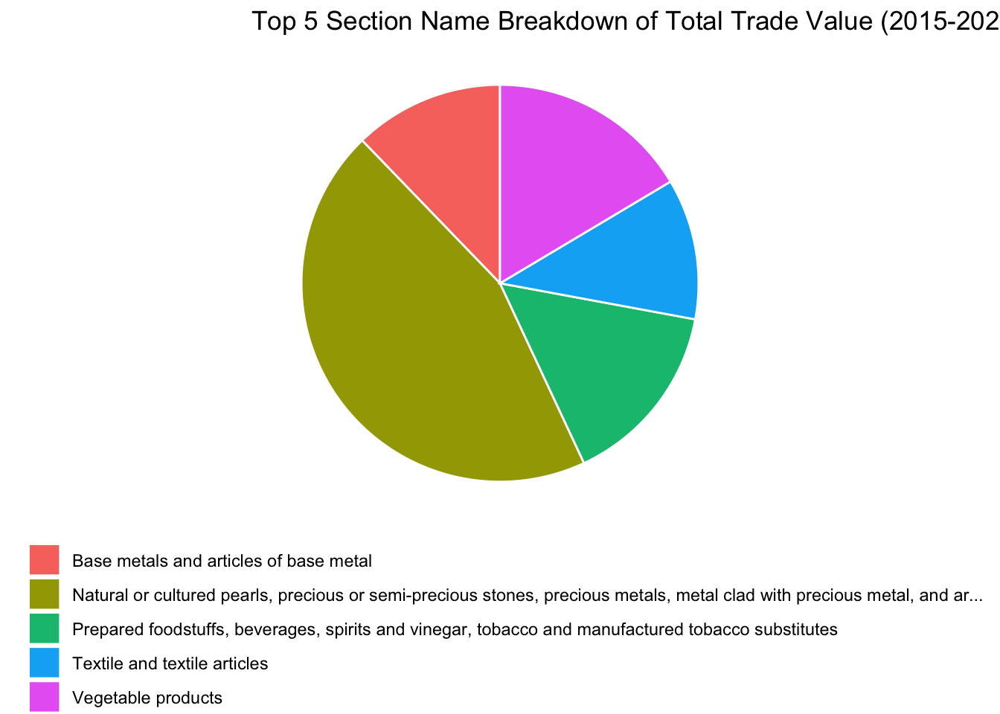
Chart Description: This lollipop chart illustrates 5 year trade value (total import + export) change between Turkey and its top 10 trading partners. Positive bars represent increase in trade values between Turkey and its top 10 partners in 5 years, while negative bars indicate decrease in trade relationship. The chart offers a concise overview of Turkey’s trade relationship with its key partners, presenting input for further analysis on defining partners that have close relationship with Turkey.
Stacked Column Chart: Close Trade Partners (Increasing trend in trade volumes) listed with Product Categories
Code
# Filter data for Iraq, Spain, and USAtrade_data_selected_partners<- read_wits_turkey_data_with_partners %>%filter(partner_name %in%c("Iraq", "Spain", "USA"))# Add a new column for total tradetrade_data_selected_partners <- trade_data_selected_partners%>%mutate(total_trade = (trade_value_usd_imp + trade_value_usd_exp)/1000000)# Group by section_name and calculate total trade values for each section_nametotal_trade_values_5_year <- trade_data_selected_partners %>%filter(year >=2015& year <=2020) %>%group_by(section_name, partner_name) %>%summarise(total_trade_value =sum(total_trade))
`summarise()` has grouped output by 'section_name'. You can override using the
`.groups` argument.
Warning: `as.tibble()` was deprecated in tibble 2.0.0.
ℹ Please use `as_tibble()` instead.
ℹ The signature and semantics have changed, see `?as_tibble`.
# A tibble: 15 × 3
section_name partner_name total_trade_value
<chr> <chr> <dbl>
1 Natural or cultured pearls, precious or semi-… Iraq 20051.
2 Vegetable products Iraq 7368.
3 Prepared foodstuffs, beverages, spirits and v… Iraq 6781.
4 Base metals and articles of base metal Iraq 5474.
5 Textile and textile articles Iraq 5141.
6 Vehicles, aircraft, vessels and associated tr… Spain 18065.
7 Textile and textile articles Spain 15406.
8 Machinery and mechanical appliances, electric… Spain 9891.
9 Base metals and articles of base metal Spain 8985.
10 Product of the chemicals or allied industries Spain 5046.
11 Vehicles, aircraft, vessels and associated tr… USA 20741.
12 Machinery and mechanical appliances, electric… USA 19968.
13 Base metals and articles of base metal USA 16568.
14 Textile and textile articles USA 13360.
15 Product of the chemicals or allied industries USA 8983.
Code
# Truncate section names to the first 20 charactersfiltered_commodity_data$truncated_name <-str_trunc(filtered_commodity_data$section_name, 50)# Stacked Column Chartggplot(filtered_commodity_data, aes(x = partner_name, y = total_trade_value, fill = truncated_name)) +geom_col() +labs(title ="Total Trade Breakdown by Section Name and Partner (2015-2020)",x ="Partner Name", y ="Total Trade mn USD",fill ="Section Name") +theme_minimal() +theme(legend.position ="bottom") +guides(fill =guide_legend(nrow =3))
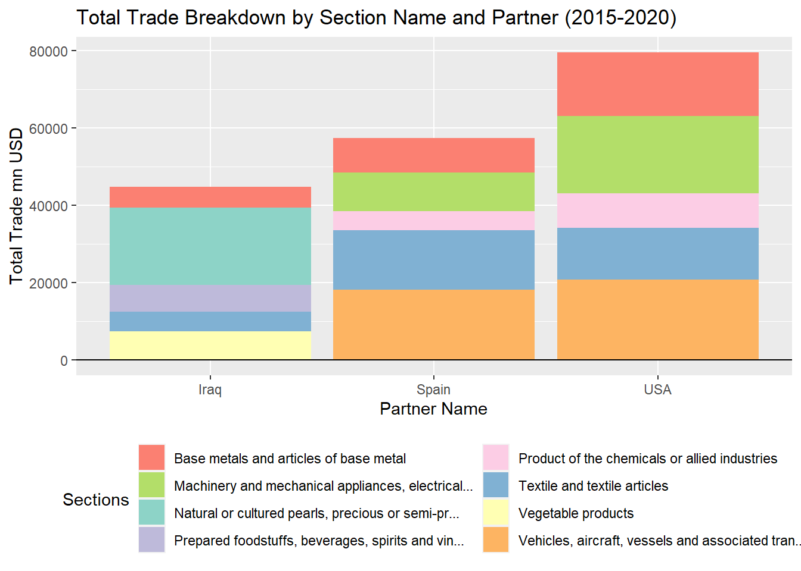
Chart Description: These pie charts illustrate commodity breakdown data of each country that has close relationship with Turkey which are defined in previous analysis. Iraq, USA and Spain were analyzed in this section. Each pie chart represent share of top 5 commodities in total trade values.
Line Chart: Trend Analysis of Exports Value by top 10 product categories
# Filter the data with the selected top export productsexport_plot_data <- read_wits_turkey_data_with_partners %>%filter(section_name %in% top_export_products$section_name) %>%group_by(year, section_name) %>%summarize(total_export =sum(trade_value_usd_exp))
`summarise()` has grouped output by 'year'. You can override using the
`.groups` argument.
Code
# Filter the data based on the top export productsfiltered_export_data <- export_plot_data %>%filter(section_name %in% top_export_products$section_name)# Truncate section names to the first 20 charactersfiltered_export_data$truncated_name <-str_trunc(filtered_export_data$section_name, 50)# Get distinct truncated names for colorscolor_names <-unique(filtered_export_data$truncated_name)# Generate a limited number of distinct colorscolors <-brewer.pal(length(color_names), "Set3")# Create the plot with geom_pointggplot(data = filtered_export_data, aes(x = year, y = total_export, color = truncated_name)) +geom_line(size =1.2, alpha =0.7) +labs(title ="Export Trends of Top 10 Products (2002-2020, Turkey)", x ="Year", y ="Total Export Value (USD)") +theme(legend.position ="bottom") +guides(color =guide_legend(nrow =5)) +scale_color_manual(values =setNames(colors, color_names), name ="")
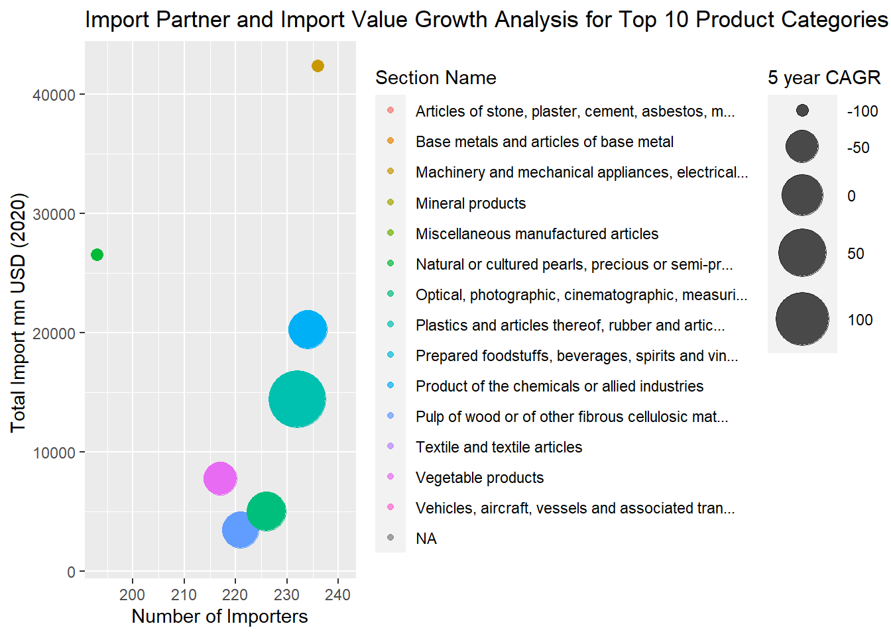
Chart Description: Explore the export trends of Turkey’s top 10 product categories from 2002 to 2020. Each line represents a product category, showcasing the variation in total export values over the years. The colors distinguish different product categories, providing a visual overview of their respective export dynamics.
Line Chart: Trend Analysis of Global Market Share of Total Exports Value of Turkey in Total Exports by product categories
Code
#tba
Chart Description: This chart Turkey’s export value in global exports, providing country’s presence and strategic importance in commodity markets
Line Chart: Trend Analysis of Import Value by top 10 product categories
# Filter the data with the selected top import productsimport_plot_data <- read_wits_turkey_data_with_partners %>%filter(section_name %in% top_import_products$section_name) %>%group_by(year, section_name) %>%summarize(total_import =sum(trade_value_usd_imp))
`summarise()` has grouped output by 'year'. You can override using the
`.groups` argument.
Code
# Filter the data based on the top import productsfiltered_import_data <- import_plot_data %>%filter(section_name %in% top_import_products$section_name)# Truncate section names to the first 20 charactersfiltered_import_data$truncated_name <-str_trunc(filtered_import_data$section_name, 50)# Get distinct truncated names for colorscolor_names <-unique(filtered_import_data$truncated_name)# Generate a limited number of distinct colorscolors <-brewer.pal(length(color_names), "Set3")# Create the plot with geom_pointggplot(data = filtered_import_data, aes(x = year, y = total_import, color = truncated_name)) +geom_line(size =1.2, alpha =0.7) +labs(title ="Import Trends of Top 10 Products (2002-2020, Turkey)", x ="Year", y ="Total Import Value (USD)") +theme(legend.position ="bottom") +guides(color =guide_legend(nrow =5)) +scale_color_manual(values =setNames(colors, color_names), name ="")
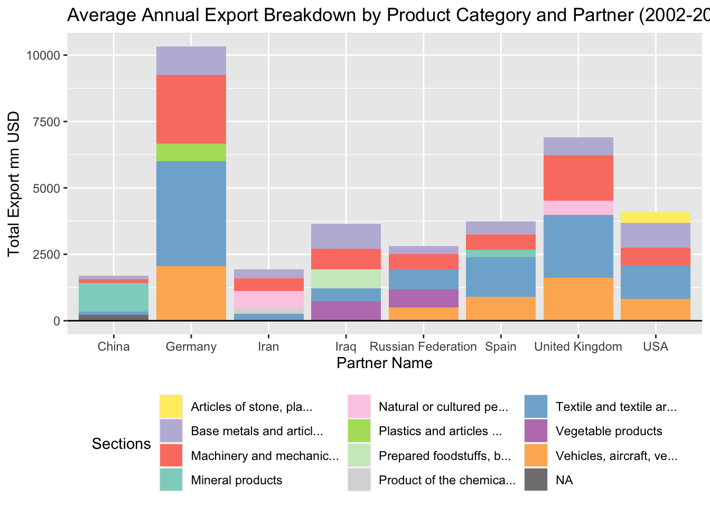
Chart Description: Description: Explore the import trends of Turkey’s top 10 product categories from 2002 to 2020. Each line represents a product category, showcasing the variation in total import values over the years. The colors distinguish different product categories, providing a visual overview of their respective import dynamics.
3.7 Step 6: Interpretation and Conclusions
Description: In this final step, interpretations and conclusions are drawn based on the analysis. It’s an opportunity to provide insights into the data, make recommendations, and outline potential next steps for further final report and presentation
Source Code
---title: " Exploratory Data Analysis"date: "2023-12-14"format: html: code-fold: true code-tools: true---## Introduction: Exploratory Data Analysis on WITS dataWorld Integrated Trade Solution (WITS) emerges as a pivotal platform, offering a comprehensive view of international trade dynamics, with a particular focus on Turkey from 2002 to 2020. This powerful tool aggregates data from diverse sources to furnish users with valuable insights into Turkey's merchandise trade, tariffs, and non-tariff measures during this specific period. With an expansive database, WITS facilitates informed decision-making and strategic planning for researchers, policymakers, and businesses interested in Turkey's trade landscape.Embarking on an Exploratory Data Analysis (EDA) journey within WITS involves loading datasets, cleaning data, and employing statistical and visual analyses specific to Turkey's trade from 2002 to 2020. This process unveils trade patterns, identifies trends, and provides actionable insights, enabling stakeholders to navigate the complexities of Turkey's trade dynamics during this crucial timeframe. The synergy between WITS and EDA empowers users to make informed decisions and strategic choices, fostering a more interconnected and informed landscape for Turkey's economy and trade.------------------------------------------------------------------------## Step 1: Load Required Libraries```{r}library(tidyverse)library(dplyr)library(ggplot2)library(RColorBrewer)library(ggridges)```Description: Loading necessary libraries provides access to functions and tools that simplify data manipulation and visualization. dplyr is helpful for data wrangling, and ggplot2 is excellent for creating informative and visually appealing plots.## Step 2: Load Datasets```{r}# Load the datasetsloaded_datasets <-readRDS("wits_data.rds")read_wits_turkey_data_only <- loaded_datasets$wits_turkey_data_onlyread_wits_turkey_data_with_partners <- loaded_datasets$wits_turkey_data_with_partnersread_wits_all_country_data <- loaded_datasets$wits_all_country_data```Description: Loading datasets is the initial step in any data analysis. It allows us to bring in the data that we'll be working with throughout the analysis.## Step 3: Overview of the Datasets```{r}str(read_wits_turkey_data_only)summary(read_wits_turkey_data_only)str(read_wits_turkey_data_with_partners)summary(read_wits_turkey_data_with_partners)str(read_wits_all_country_data)summary(read_wits_all_country_data)```Description: Checking the structure and summary of the datasets provides an understanding of the variables, data types, and basic statistics. This helps identify potential issues and informs subsequent cleaning and analysis steps.## Step 4: Data Cleaning```{r}sapply(read_wits_turkey_data_only, function(x) sum(is.na(x)))# will be done```Description: Cleaning the data involves addressing missing values and outliers. It ensures that the data is reliable and ready for further analysis.## Step 5: Exploratory Data Analysis (EDA)### Country Profile| | ||----------------------------|-----|| **Export Ranking:** | || **Import Ranking:** | || **Top Trading Partners**: | |*Most available data is as of 2020 year-end:*```{r}#Calculate Country Profile Stats```**Line Chart: Exports and Imports over the Years:**```{r}total_exports <- read_wits_turkey_data_only %>%group_by(year) %>%summarize(total_exports =sum(trade_value_usd_exp))total_imports <- read_wits_turkey_data_only %>%group_by(year) %>%summarize(total_imports =sum(trade_value_usd_imp))# Visualize exports and imports over the yearsggplot() +geom_line(data = total_exports, aes(x = year, y = total_exports, color ="Exports"), size =1.5) +geom_line(data = total_imports, aes(x = year, y = total_imports, color ="Imports"), size =1.5) +labs(title ="Turkey's Exports and Imports Over the Years", x ="Year", y ="Trade Value (USD)")```*Line Chart Description: Analyzing exports and imports over time provides insights into the trade trends of the country. Visualization helps in identifying patterns and understanding the overall trade dynamics***Result: Turkey's status is as a net importer since 2002**### Exports & Imports Analysis**Top 10 product categories are listed in this section both for exports and imports in order to analyze this further by looking into trade partners of these product types****Clustered Column Chart: Diversity of Exported Products**```{r}export_plot_data <- read_wits_turkey_data_only %>%group_by(section_name) %>%summarize(total_export =sum(trade_value_usd_exp)) %>%top_n(10)# Truncate section names to the first 20 charactersexport_plot_data$truncated_name <-str_trunc(export_plot_data$section_name, 50)# Get distinct truncated names for colorscolor_names <-unique(export_plot_data$truncated_name)# Generate a limited number of distinct colorscolors <-brewer.pal(length(color_names), "Set3")ggplot(data = export_plot_data, aes(x =reorder(section_name, -total_export), y = total_export, fill = truncated_name)) +geom_bar(stat ="identity", color ="black") +labs(title ="Top 10 Diversity of Exported Products (2002-2020, Turkey)", x ="Products", y ="Total Export Value (USD)") +theme(axis.text.x =element_blank(), axis.title.x =element_blank(), legend.position ="bottom") +guides(fill =guide_legend(nrow =5)) +scale_fill_manual(values =setNames(colors, color_names), name ="")```*Chart Description:The "Diversity of Exported Products" graphic provides insights into Turkey's international trade from 2002 to 2020. It showcases the top 10 product categories that Turkey has predominantly exported over the years. Each product category is represented by a distinct color, offering a visual representation of the diversity and distribution of exported goods. The vertical bars display the total export values in USD for each product category, providing a clear overview of Turkey's major export sectors. The graphic aids in identifying trends, patterns, and the relative significance of various product categories in Turkey's export landscape.***Bubble Chart: Relationship between Complexity and Annual Export Growth (CAGR Last 5 years) for Top Product Categories**```{r}# Step 1: Find the top 10 section_name based on trade_valuetop_sections <- read_wits_turkey_data_with_partners %>%group_by(section_name) %>%summarize(total_export =sum(trade_value_usd_exp)) %>%arrange(desc(total_export)) %>%head(10)# Step 2: Filter the dataframe to include only the top 10 section_namesread_wits_turkey_data_with_partners_top10 <- read_wits_turkey_data_with_partners %>%filter(section_name %in% top_sections$section_name)# Step 3: Count partner_names corresponding to the top 10 section_names in the entire dataframeread_wits_turkey_data_with_partners_top10 <- read_wits_turkey_data_with_partners_top10 %>%group_by(section_name) %>%mutate(partner_count =n_distinct(partner_name)) %>%ungroup()read_wits_turkey_data_with_partners_top10 <- read_wits_turkey_data_with_partners_top10 %>%group_by(section_name) %>%mutate(cagr = ((trade_value_usd_exp[2020]/trade_value_usd_exp[2015])^(1/5)-1)*100) %>%ungroup()read_wits_turkey_data_with_partners_top10 <- read_wits_turkey_data_with_partners_top10 %>%filter(year ==2020) %>%group_by(section_name) %>%mutate(total_trade_value_exp_2020 =sum(trade_value_usd_exp)/1000000) %>%ungroup()print(read_wits_turkey_data_with_partners_top10)# Truncate section names to the first 20 charactersread_wits_turkey_data_with_partners_top10$truncated_name <-str_trunc(read_wits_turkey_data_with_partners_top10$section_name, 50)# Get distinct truncated names for colorscolor_names <- read_wits_turkey_data_with_partners_top10$truncated_nameggplot(read_wits_turkey_data_with_partners_top10, aes(x = partner_count, y = total_trade_value_exp_2020, size = cagr, color = truncated_name)) +geom_point(alpha =0.7) +scale_size_continuous(range =c(3, 15)) +scale_y_continuous(limits =c(min(read_wits_turkey_data_with_partners_top10$total_trade_value_exp_2020), max(read_wits_turkey_data_with_partners_top10$total_trade_value_exp_2020) +5)) +# adjust y-axis scalescale_x_continuous(limits =c(min(read_wits_turkey_data_with_partners_top10$partner_count), max(read_wits_turkey_data_with_partners_top10$partner_count) +5)) +# adjust x-axis scalescale_color_manual(values = scales::hue_pal()(length(unique(read_wits_turkey_data_with_partners_top10$section_name)))) +# Use a different color palettelabs(title ="Bubble Chart of Top 10 Section Names",x ="Number of Export Countries",y ="Total Export Revenue mn USD (2020) ",size ="5 year CAGR", color ="Section Name") +theme_minimal ()```*Chart Description: Complexity represents count of Turkey's export partners for each product category that are defined in Analysis of Diversity of Exported Products, that are shown on x axis. Compounded growth rates of exports are represented on y axis. Each bubble represents exports value as of 2020 for each product category.***Clustered Column Chart: Diversity of Imported Products**```{r}imported_plot_data <- read_wits_turkey_data_only %>%group_by(section_name) %>%summarize(total_import =sum(trade_value_usd_imp)) %>%top_n(10)# Truncate section names to the first 20 charactersimported_plot_data$truncated_name <-str_trunc(imported_plot_data$section_name, 50)# Get distinct truncated names for colorscolor_names <-unique(imported_plot_data$truncated_name)# Generate a limited number of distinct colorscolors <-brewer.pal(length(color_names), "Set3")ggplot(data = imported_plot_data, aes(x =reorder(section_name, -total_import), y = total_import, fill = truncated_name)) +geom_bar(stat ="identity", color ="black") +labs(title ="Top 10 Diversity of Imported Products (2002-2020, Turkey)", x ="Products", y ="Total Import Value (USD)") +theme(axis.text.x =element_blank(), axis.title.x =element_blank(), legend.position ="bottom") +guides(fill =guide_legend(nrow =5)) +scale_fill_manual(values =setNames(colors, color_names), name ="")```*Chart Description: The "Diversity of Imported Products" graphic illustrates the diversity of products that Turkey has imported from other countries between 2002 and 2020. Similar to the exported products graphic, this visualization highlights the top 10 imported product categories. Each category is uniquely colored for easy identification. The vertical bars display the total import values in USD for each product category, offering insights into the composition of Turkey's imports. This graphic assists in understanding the import dynamics, identifying significant product categories, and discerning patterns in Turkey's international trade relationships.***Bubble Chart: Relationship between Complexity and Annual Import Growth (CAGR Last 5 years) for Top Product Categories**```{r}# Step 1: Find the top 10 section_name based on trade_valuetop_sections <- read_wits_turkey_data_with_partners %>%group_by(section_name) %>%summarize(total_import =sum(trade_value_usd_imp)) %>%arrange(desc(total_import)) %>%head(10)# Step 2: Filter the dataframe to include only the top 10 section_namesread_wits_turkey_data_with_partners_top10 <- read_wits_turkey_data_with_partners %>%filter(section_name %in% top_sections$section_name)# Step 3: Count partner_names corresponding to the top 10 section_names in the entire dataframeread_wits_turkey_data_with_partners_top10 <- read_wits_turkey_data_with_partners_top10 %>%group_by(section_name) %>%mutate(partner_count =n_distinct(partner_name)) %>%ungroup()read_wits_turkey_data_with_partners_top10 <- read_wits_turkey_data_with_partners_top10 %>%group_by(section_name) %>%mutate(cagr = ((trade_value_usd_imp[2020]/trade_value_usd_imp[2015])^(1/5)-1)*100) %>%ungroup()read_wits_turkey_data_with_partners_top10 <- read_wits_turkey_data_with_partners_top10 %>%filter(year ==2020) %>%group_by(section_name) %>%mutate(total_trade_value_imp_2020 =sum(trade_value_usd_imp)/1000000) %>%ungroup()print(read_wits_turkey_data_with_partners_top10)# Truncate section names to the first 20 charactersread_wits_turkey_data_with_partners_top10$truncated_name <-str_trunc(read_wits_turkey_data_with_partners_top10$section_name, 50)# Get distinct truncated names for colorscolor_names <- read_wits_turkey_data_with_partners_top10$truncated_nameggplot(read_wits_turkey_data_with_partners_top10, aes(x = partner_count, y = total_trade_value_imp_2020, size = cagr, color = truncated_name)) +geom_point(alpha =0.7) +scale_size_continuous(range =c(3, 15)) +scale_y_continuous(limits =c(min(read_wits_turkey_data_with_partners_top10$total_trade_value_imp_2020), max(read_wits_turkey_data_with_partners_top10$total_trade_value_imp_2020) +5)) +# adjust y-axis scalescale_x_continuous(limits =c(min(read_wits_turkey_data_with_partners_top10$partner_count), max(read_wits_turkey_data_with_partners_top10$partner_count) +5)) +# adjust x-axis scalescale_color_manual(values = scales::hue_pal()(length(unique(read_wits_turkey_data_with_partners_top10$section_name)))) +# Use a different color palettelabs(title ="Bubble Chart of Top 10 Section Names",x ="Number of Importers",y ="Total Import mn USD (2020) ",size ="5 year CAGR", color ="Section Name") +theme_minimal ()```*Chart Description: Complexity represents count of Turkey's import partners for each product category that are defined in Analysis of Diversity of Imported Products, that are shown on x axis. Compounded growth rates of imports are represented on y axis. Each bubble represents exports value as of 2020 for each product category.*### Trade Partnership Analysis**Clustered Column Chart: Top 10 Trading Partners by Total Trade Value**```{r}top_partners <- read_wits_turkey_data_with_partners %>%group_by(partner_name) %>%summarize(total_trade =sum(trade_value_usd_exp + trade_value_usd_imp)) %>%arrange(desc(total_trade)) %>%top_n(10)# Get a color palette from RColorBrewerpartner_colors <-brewer.pal(length(top_partners$partner_name), "Set3")# Visualize top trading partnersggplot(data = top_partners, aes(x =reorder(partner_name, -total_trade), y = total_trade, fill = partner_name)) +geom_bar(stat ="identity", color ="black") +labs(title ="Top 10 Trading Partners", x ="Partner", y ="Total Trade Value (USD)") +theme(axis.text.x =element_text(angle =90, hjust =1)) +scale_fill_manual(values = partner_colors)+theme(legend.position ="none")```*Chart Description: Analyzing trade with specific partners helps in identifying key collaborators. Visualizing the top trading partners provides a clear understanding of the major contributors to the country's trade.***Clustered Column Chart: Trade Partner Classification as Net Exporter or Importer**```{r}partners <- read_wits_turkey_data_with_partners %>%group_by(partner_name) %>%summarize(total_trade =sum(trade_value_usd_exp + trade_value_usd_imp)) %>%arrange(desc(total_trade)) %>%top_n(10)top_partners <- read_wits_turkey_data_with_partners %>%filter(partner_name %in% partners$partner_name) %>%group_by(partner_name) %>%summarize(total_export =sum(trade_value_usd_exp),total_import =sum(trade_value_usd_imp)) %>%arrange(desc(total_export + total_import)) %>%top_n(10)# Get a color palette from RColorBrewerpartner_colors <-brewer.pal(n =length(top_partners$partner_name) *2, name ="Paired")# Visualize import and export relations with top trading partnersggplot(data = top_partners, aes(x =reorder(partner_name, -total_export - total_import))) +geom_bar(aes(y = total_export, fill ="Export"), stat ="identity", position ="dodge", color ="black") +geom_bar(aes(y =-total_import, fill ="Import"), stat ="identity", position ="dodge", color ="black") +labs(title ="Import and Export Relations with Top 10 Trading Partners", x ="Partner", y ="Total Trade Value (USD)") +scale_fill_manual(values =c("Export"= partner_colors[1], "Import"= partner_colors[2]), name ="") +theme(axis.text.x =element_text(angle =90, hjust =1),legend.position ="top")```**Clustered Column Chart: Net Trade Difference with Top 10 Trading Partners (2015-2020)**```{r}# Vector of countries to filterselected_countries <-c("Germany", "Russian Federation", "China", "Italy", "USA", "United Kingdom", "France", "Spain", "Iran", "Iraq")top_partners <- read_wits_turkey_data_with_partners %>%filter(partner_name %in% selected_countries, year %in%2015:2020) %>%group_by(partner_name, year) %>%summarize(total_export =sum(trade_value_usd_exp),total_import =sum(trade_value_usd_imp)) %>%mutate(trade_difference = total_export - total_import)# Create a bar plot to show trade comparison with selected trading partnersggplot(data = top_partners, aes(x =reorder(partner_name, -trade_difference), y = trade_difference/1000000, fill =factor(sign(trade_difference)))) +geom_bar(stat ="identity", position =position_dodge(width =0.8), color ="black", height =1.5) +# Adjust the 'height' parameterfacet_wrap(~year, scales ="free_y", ncol =3) +scale_fill_manual(values =c("red", "blue"), name ="",labels =c("Turkey net exporter", "Turkey net importer")) +labs(title ="Trade Comparison with Top 10 Trading Partners(2015-2020)",x ="Partner",y ="Trade Difference (Export - Import, mn USD)") +theme(axis.text.x =element_text(angle =90, hjust =1),legend.position ="top")```*Chart Description: This bar plot illustrates the import and export relations between Turkey and its top 10 trading partners. Bars shows Turkey's net importer & exporter status as each of them corresponds to a specific partner, and positive figures represent Turkey's status as net exporter while negative figures represent net importer. The plot offers a concise overview of Turkey's trade dynamics with its key partners, emphasizing the balance of trade and highlighting significant trading relationships. // [Burada export-import yapıp net exporter veya net importer olup olmadığını olcelim]{.underline}***Lollipop Chart: Trend Analysis of Top 10 Trading Partners' trade value**```{r}# Replace "YourFirstYear" and "YourEndYear" with the actual years that is selected for the analysisfirst_year <-2015end_year <-2020# Calculate the total trade value for the first and end years for each partnertotal_trade_by_partner <- read_wits_turkey_data_with_partners %>%group_by(partner_name) %>%summarise(total_trade_first =sum(trade_value_usd_imp[year == first_year] + trade_value_usd_exp[year == first_year]),total_trade_end =sum(trade_value_usd_imp[year == end_year] + trade_value_usd_exp[year == end_year]))# Find the top 10 partners based on the total trade valuetop_10_partners <- total_trade_by_partner %>%top_n(10, wt = total_trade_end)# Calculate the percentage changepercentage_change <- top_10_partners %>%mutate(percentage_change = ((total_trade_end - total_trade_first) / total_trade_first) *100)# Create a lollipop chartggplot(percentage_change, aes(x =reorder(partner_name, percentage_change), y = percentage_change)) +geom_segment(aes(xend =reorder(partner_name, percentage_change), yend =0), color ="skyblue", size =1) +geom_point(color ="red", size =3) +labs(title ="Top 10 Partners: Percentage Change in Total Trade Value (2015 to 2020)",x ="Partner",y ="Percentage Change in Total Trade Value") +theme(axis.text.x =element_text(angle =90, hjust =1))```*Chart Description: This lollipop chart illustrates 5 year trade value (total import + export) change between Turkey and its top 10 trading partners. Positive bars represent increase in trade values between Turkey and its top 10 partners in 5 years, while negative bars indicate decrease in trade relationship. The chart offers a concise overview of Turkey's trade relationship with its key partners, presenting input for further analysis on defining partners that have close relationship with Turkey.***Stacked Column Chart: Close Trade Partners (Increasing trend in trade volumes) listed with Product Categories**```{r}# Filter data for Iraq, Spain, and USAtrade_data_selected_partners<- read_wits_turkey_data_with_partners %>%filter(partner_name %in%c("Iraq", "Spain", "USA"))# Add a new column for total tradetrade_data_selected_partners <- trade_data_selected_partners%>%mutate(total_trade = (trade_value_usd_imp + trade_value_usd_exp)/1000000)# Group by section_name and calculate total trade values for each section_nametotal_trade_values_5_year <- trade_data_selected_partners %>%filter(year >=2015& year <=2020) %>%group_by(section_name, partner_name) %>%summarise(total_trade_value =sum(total_trade))# Filter top 5 section namesfiltered_commodity_data <- total_trade_values_5_year %>%group_by(partner_name) %>%arrange(desc(total_trade_value)) %>%slice_head(n=5)as.tibble(filtered_commodity_data)# Truncate section names to the first 20 charactersfiltered_commodity_data$truncated_name <-str_trunc(filtered_commodity_data$section_name, 50)# Stacked Column Chartggplot(filtered_commodity_data, aes(x = partner_name, y = total_trade_value, fill = truncated_name)) +geom_col() +labs(title ="Total Trade Breakdown by Section Name and Partner (2015-2020)",x ="Partner Name", y ="Total Trade mn USD",fill ="Section Name") +theme_minimal() +theme(legend.position ="bottom") +guides(fill =guide_legend(nrow =3))```*Chart Description: These pie charts illustrate commodity breakdown data of each country that has close relationship with Turkey which are defined in previous analysis. Iraq, USA and Spain were analyzed in this section. Each pie chart represent share of top 5 commodities in total trade values.***Line Chart: Trend Analysis of Exports Value by top 10 product categories**```{r}top_export_products <- read_wits_turkey_data_only %>%group_by(section_name) %>%summarize(total_export =sum(trade_value_usd_exp)) %>%top_n(10)# Filter the data with the selected top export productsexport_plot_data <- read_wits_turkey_data_with_partners %>%filter(section_name %in% top_export_products$section_name) %>%group_by(year, section_name) %>%summarize(total_export =sum(trade_value_usd_exp))# Filter the data based on the top export productsfiltered_export_data <- export_plot_data %>%filter(section_name %in% top_export_products$section_name)# Truncate section names to the first 20 charactersfiltered_export_data$truncated_name <-str_trunc(filtered_export_data$section_name, 50)# Get distinct truncated names for colorscolor_names <-unique(filtered_export_data$truncated_name)# Generate a limited number of distinct colorscolors <-brewer.pal(length(color_names), "Set3")# Create the plot with geom_pointggplot(data = filtered_export_data, aes(x = year, y = total_export, color = truncated_name)) +geom_line(size =1.2, alpha =0.7) +labs(title ="Export Trends of Top 10 Products (2002-2020, Turkey)", x ="Year", y ="Total Export Value (USD)") +theme(legend.position ="bottom") +guides(color =guide_legend(nrow =5)) +scale_color_manual(values =setNames(colors, color_names), name ="")```*Chart Description: Explore the export trends of Turkey's top 10 product categories from 2002 to 2020. Each line represents a product category, showcasing the variation in total export values over the years. The colors distinguish different product categories, providing a visual overview of their respective export dynamics.***Line Chart: Trend Analysis of Global Market Share of Total Exports Value of Turkey in Total Exports by product categories**```{r}#tba```*Chart Description: This chart Turkey's export value in global exports, providing country's presence and strategic importance in commodity markets***Line Chart: Trend Analysis of Import Value by top 10 product categories**```{r}top_import_products <- read_wits_turkey_data_only %>%group_by(section_name) %>%summarize(total_import =sum(trade_value_usd_imp)) %>%top_n(10)# Filter the data with the selected top import productsimport_plot_data <- read_wits_turkey_data_with_partners %>%filter(section_name %in% top_import_products$section_name) %>%group_by(year, section_name) %>%summarize(total_import =sum(trade_value_usd_imp))# Filter the data based on the top import productsfiltered_import_data <- import_plot_data %>%filter(section_name %in% top_import_products$section_name)# Truncate section names to the first 20 charactersfiltered_import_data$truncated_name <-str_trunc(filtered_import_data$section_name, 50)# Get distinct truncated names for colorscolor_names <-unique(filtered_import_data$truncated_name)# Generate a limited number of distinct colorscolors <-brewer.pal(length(color_names), "Set3")# Create the plot with geom_pointggplot(data = filtered_import_data, aes(x = year, y = total_import, color = truncated_name)) +geom_line(size =1.2, alpha =0.7) +labs(title ="Import Trends of Top 10 Products (2002-2020, Turkey)", x ="Year", y ="Total Import Value (USD)") +theme(legend.position ="bottom") +guides(color =guide_legend(nrow =5)) +scale_color_manual(values =setNames(colors, color_names), name ="")```*Chart Description: Description: Explore the import trends of Turkey's top 10 product categories from 2002 to 2020. Each line represents a product category, showcasing the variation in total import values over the years. The colors distinguish different product categories, providing a visual overview of their respective import dynamics.*## Step 6: Interpretation and ConclusionsDescription: In this final step, interpretations and conclusions are drawn based on the analysis. It's an opportunity to provide insights into the data, make recommendations, and outline potential next steps for further final report and presentation------------------------------------------------------------------------